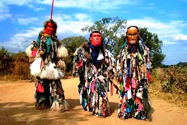
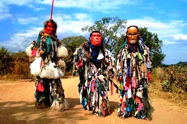

Country Overview: Malawi
Malawi, officially the Republic of Malawi, is a landlocked country in Southeastern Africa. Known as the "Warm Heart of Africa," Malawi is celebrated for its stunning Lake Malawi, diverse wildlife, and vibrant culture. With a population of over 21 million, Malawi is a nation rich in tradition and natural beauty.
 
